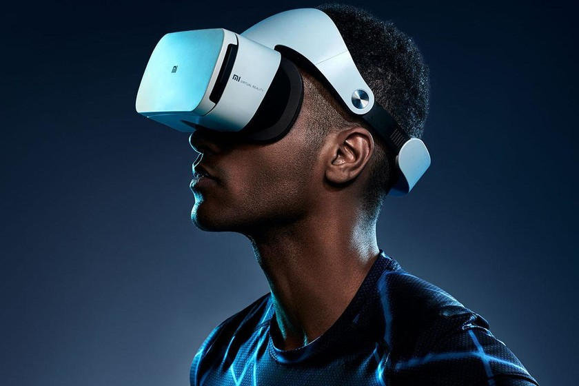
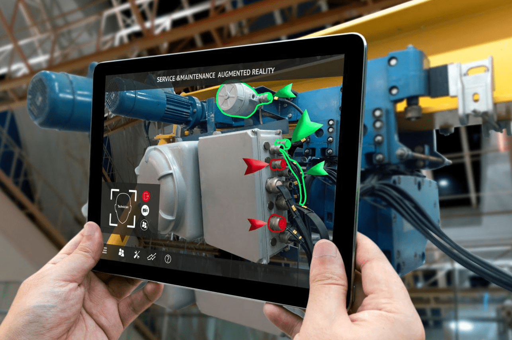

{Virtual Reality (VR)}
Se trata de una inmersión digital que nos permite interactuar virtualmente con un entorno específico creado mediante gráficos de computadora. A menudo, el usuario utiliza gafas VR y controladores manuales.

Es especialmente útil para simulaciones de entrenamiento peligrosas o costosas; prototipos virtuales con el fin de reducir costos; colaborar de forma remota; inclusive tener entretenimiento más inmersivo sin moverse de casa.
{Augmented Reality (AR)}
Es una integración de información digital con el entorno físico en tiempo real. A través de smartphones, tablets, o gafas, el usuario puede observar objetos virtuales sobrepuestos en la realidad.

Nos sirve para reparación y mantenimiento de diferentes equipos; diseñar productos sobreponiéndolos en entornos reales; optimizar productos; y monitorear infraestructuras con datos informáticos en tiempo real.
{Evidences}
-
En mi caso, con fin de la clase de I.I.S.C. e interes propio, me vi inmerso en una experiencia de VR disponible desde el laboratorio de la escuela.